왜 AI 음원을 부업으로 고를까요
강의는 "노래 많이 들으세요?"라는 질문으로 시작해요. 채팅 답은 비슷했어요. 일할 때, 공부할 때, 운동할 때, 잠들 때처럼 사람들은 무언가를 하면서 음악을 틀어요. 강사는 이게 음악 시장의 바닥이 단단한 이유라고 봐요.
화면은 검색창 자동완성으로 이걸 보여 줘요. 왼쪽은 '일할때 듣기 좋은 노래 광고없는', 오른쪽은 '수면 플레이리스트 광고없음'처럼 상황과 '광고 없음'이 붙은 검색어가 줄줄이 떠요.
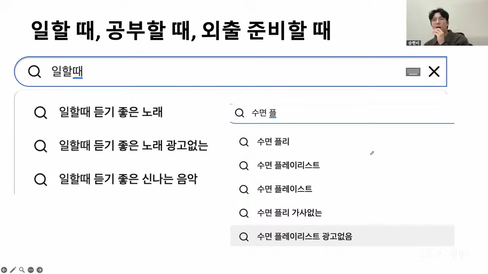
플레이리스트 한 편이 버는 돈
강사는 조회수 526만 회짜리 '새벽감성 인디 플레이리스트' 영상을 보여 주며 수익을 맞혀 보라고 해요. 흔히 조회수 1회에 1원쯤이라 생각해 500만~1,000만 원을 떠올리지만, 슬라이드의 답은 '음원 1회 조회당 5원', 약 2,630만 원이에요. 음악 영상은 길어서 중간 광고를 많이 넣을 수 있기 때문이라고 설명해요.
이런 플레이리스트는 요즘 대부분 사람이 아니라 AI가 만들어요. 강사가 꼽는 도구는 Suno예요. 다른 서비스도 있지만 Suno가 공식 라이선스를 가장 먼저 받았고 품질도 가장 좋다는 게 이유예요. 슬라이드에는 'AI입니다!' 아래 Suno 로고와 '이름은 수노!'가 붙어 있어요.
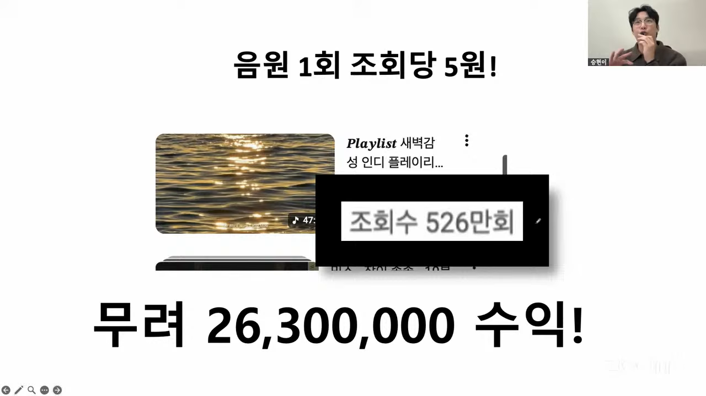
시작을 망설이는 이유도 채팅으로 모았어요. 음악을 몰라서, 악보를 못 봐서, 편집을 못 해서, 어떤 음악을 만들지 몰라서였죠. 강사는 자기도 10년 넘게 음악을 했지만 악보를 못 본다며, AI로 만드니 몰라도 된다고 답해요. 526만 회짜리 플레이리스트도 자기 기준으론 30분이면 만든다고 해요.
음악이 다른 부업보다 나은 이유
슬라이드는 '비교 불가한 압도적 수익구조'를 두 칸으로 나눠요. 왼쪽 1번은 무한 반복 소비예요. 한 번 본 영상은 질려서 다시 안 보지만, 음악은 플레이리스트에 담아 24시간 틀어 둬요. 10년 전 '벚꽃 엔딩'을 지금도 듣는 것처럼요. 오른쪽 2번은 자산의 복리 효과예요. 올린 곡이 늘수록 청취 시간이 쌓이고 정산금도 계속 늘어요.
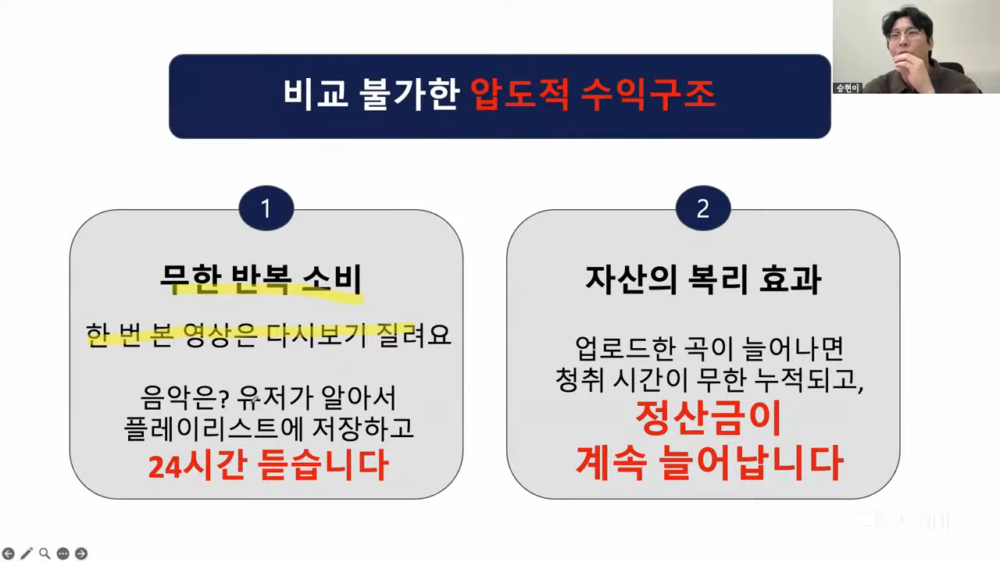
세 번째 장점은 정산 통화예요. 해외 플랫폼에서 나오는 수익이라 달러로 들어온다고 강조해요. 슬라이드 아래쪽에 '원화랑은 차원이 다릅니다. 전세계에서 달러 받는 미친 부업'이라고 적혀 있어요.
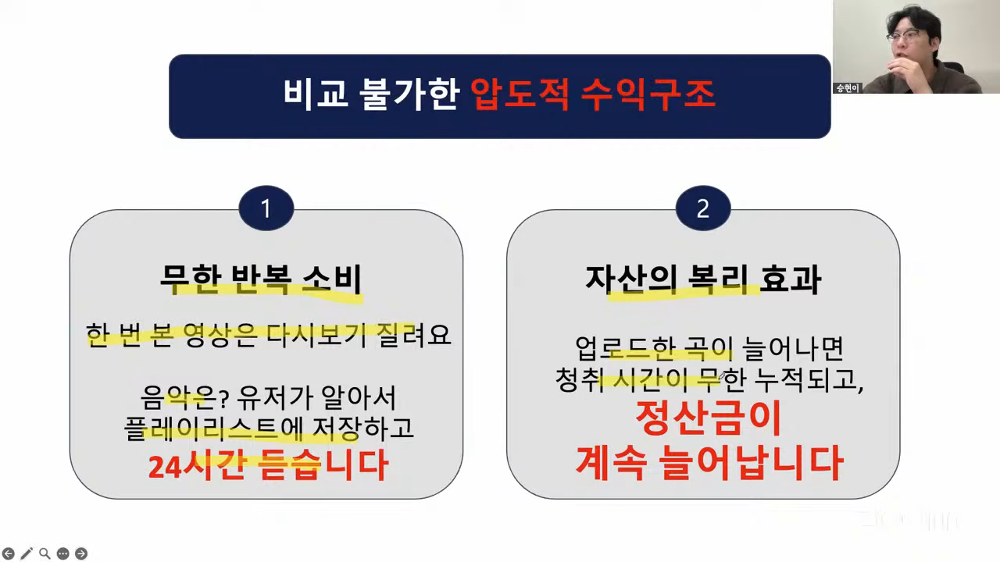
대량 삭제는 위기일까요
"지금 들어가도 늦지 않았냐"는 질문에 강사는 뉴스 화면을 띄워요. 스포티파이가 스트리밍 조작 의혹으로 AI 음원 수만 곡을 퇴출하고 메타데이터·스팸 필터를 도입했다는 기사예요. 강사는 이걸 호재로 읽어요. 삭제된 건 스트리밍을 조작하거나 정책을 어기며 찍어낸 계정이니, 정공법으로 하는 사람에겐 경쟁자가 줄어든 셈이라는 거예요.
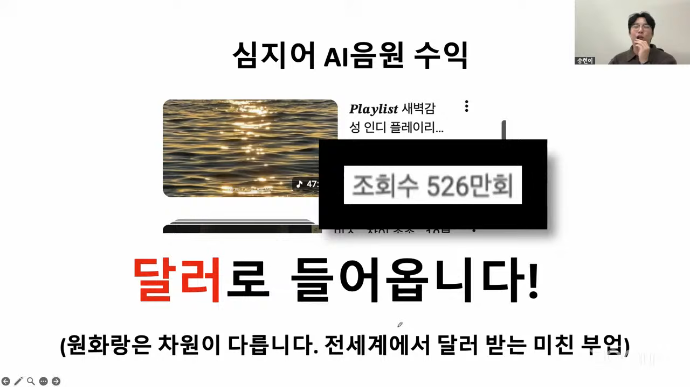
이어지는 슬라이드가 강의 전체의 공식이에요. 1번 'AI 정책 확인하고', 2번 '퀄리티 좋은 AI음악 만들기'를 지키면 수익화로 이어진다는 거예요. 뒤의 모든 내용이 이 두 칸을 풀어 쓴 거예요.
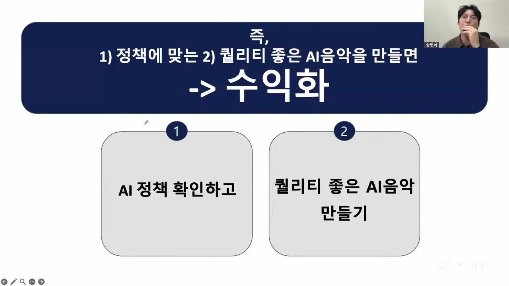
정책을 먼저 알아야 하는 이유
정책 이야기에 들어가기 전에 강사는 특강 내내 나올 용어 세 개를 정리해요. 슬라이드의 세 칸이 그대로 정의예요.
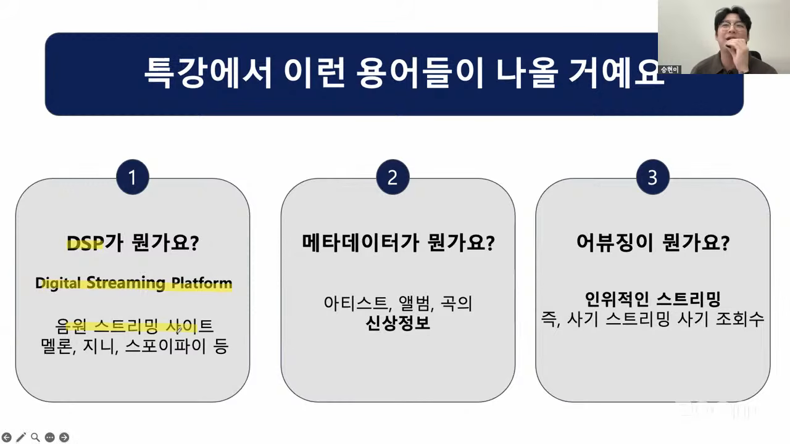
- DSP(Digital Streaming Platform): 멜론, 지니, 스포티파이, 애플 뮤직 같은 음원 스트리밍 사이트예요.
- 메타데이터: 아티스트·앨범·곡의 신상 정보예요. 국적, 장르와 서브 장르, 작사·작곡가, 가사 같은 것들이죠.
- 어뷰징: 인위로 만든 가짜 스트리밍이에요. 예전의 음원 사재기가 대표적이고, 지금은 유튜브 조회수와 시청 시간도 살 수 있어요.
2023년부터 2026년까지
강사는 AI 음원 시장이 4년 사이 어떻게 바뀌었는지 한 장으로 보여 줘요. 왼쪽 두 칸(2023, 2024)은 흰 상자, 오른쪽 두 칸(2025, 2026)은 빨간 테두리예요. 빨간 화살표가 2024와 2025 사이에 있는데, 여기서 판이 바뀌었다는 뜻이에요.
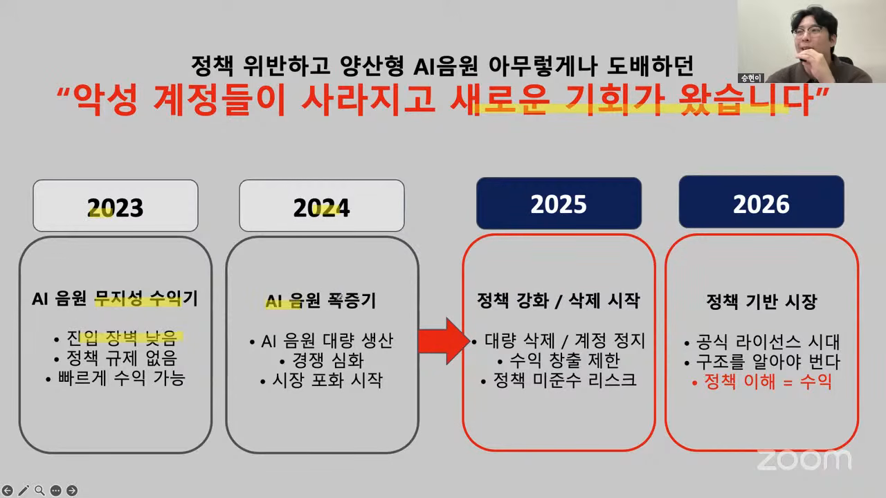
| 연도 | 슬라이드 이름 | 무슨 일이 있었나요 |
|---|---|---|
| 2023 | AI 음원 무지성 수익기 | 진입 장벽이 낮고 규제가 없었어요. 올리기만 하면 돈이 됐어요. |
| 2024 | AI 음원 폭증기 | 돈이 된다는 게 알려지며 대량 생산이 시작됐고 시장이 포화됐어요. |
| 2025 | 정책 강화·삭제 시작 | 대량 삭제, 계정 정지, 수익 창출 제한이 시작됐어요. 스포티파이는 7,500만 곡을 지웠다고 강사는 말해요. |
| 2026 | 정책 기반 시장 | 공식 라이선스 시대예요. 구조를 알아야 돈을 번다, 정책 이해가 곧 수익이라고 정리해요. |
정책을 확인하지 않으면 어떻게 될까요. 슬라이드 왼쪽에 네 가지 결과가 쌓여 있어요. 알고리즘 노출 0, 수익창출 정지, 정책의 변화, 채널 삭제예요. 오른쪽 결론은 '오늘의 수익이 내일 0원이 될 수 있습니다'예요. 강사는 학교에 들어가서 교칙을 모르고 다니는 학생과 같다고 비유해요.
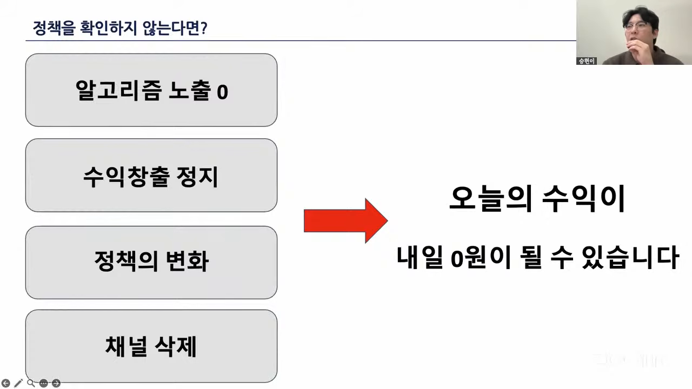
그래도 강사는 음악 시장이 레드오션이 된 적은 한 번도 없다고 말해요. 새 걸그룹이 나와도 기존 걸그룹이 계속 돈을 벌고, 유튜버가 많아져도 미스터비스트가 못 버는 게 아니라는 거예요. 자신도 2025년에 시작해서 벌었다고 덧붙여요.
플랫폼별 AI 음원 정책
강사는 돈을 벌어다 주는 플랫폼별로 최근 정책을 한 장씩 정리해 와요. 내용이 많아서 먼저 표로 묶고, 슬라이드별로 짚을게요.
| 플랫폼 | 슬라이드의 핵심 | 강사의 해석 |
|---|---|---|
| 스포티파이 | AI 페르소나 배지, 배지 아티스트는 추천 제외, 인간 아티스트 인증 | 팔로워 수십만 명 규모부터 붙어요. 초보는 걱정 안 해도 돼요. |
| 애플 뮤직 | 어뷰징 적발 시 로열티 압수와 기존 로열티 회수, 알림 없는 삭제 | AI 음원은 나오지만 유통사마다 달라요. |
| 유튜브 | 수익 창출 기준 변경, AI 슬롭 배제, 조회수당 최대 12원 | 시청 지속 시간이 클릭률보다 중요해져요. |
| 틱톡·인스타그램 | 동의 없는 AI 복제 즉시 제재, AI 라벨 의무 | 돈 벌기엔 어렵다고 봐요. |
| 디저 | 6개월 무재생 AI 음원 삭제, 추천 100% 제외, AI 탐지 기술 | 가장 위험한 플랫폼이에요. 한국 IP(Internet Protocol)로는 못 들어요. |
| 타이달 | AI 음악 로열티 미제공 | 한국에서 서비스하지 않아요. |
| Suno | Pro 월 20건, 상위 요금제 월 60건 다운로드 제한 | 상위 요금제를 쓰면 타격이 없어요. |
스트리밍 1회당 로열티는 애플 뮤직이 가장 높고, 그다음 유튜브, 스포티파이 순이라고 강사는 말해요.
스포티파이: AI 페르소나 배지
슬라이드에는 다섯 줄이 있어요. 1번이 'AI 페르소나' 배지 도입(8월 11일 발표)이에요. 실제 사람이 없는 가상 AI 아티스트 계정이 대상이고, 9월부터 검색·배너·플레이리스트 옆에 배지가 붙어요. 2번은 배지가 붙은 아티스트를 모든 추천·에디토리얼 플레이리스트에서 빼는 '디폴트 배제'예요. 3번 'Verified by Spotify'는 반대로 진짜 사람임을 증명한 아티스트에게 주는 인증 마크예요. SNS(Social Networking Service) 활동, 콘서트 티켓, 굿즈 같은 흔적을 보고 판단해요. 4번은 이용자 신고와 이의제기, 5번은 메이저 음반사와의 공식 AI 리믹스 준비예요.
강사는 이 배지가 팔로워 50만~100만 명은 돼야 붙는다고 봐요. 그 정도 규모면 배지가 붙어도 팬이 계속 듣는다며, 매출 8억 원을 낼 때도 배지를 받아 본 적이 없다고 해요.
애플 뮤직: 지우지 않고 돈을 회수해요
애플 뮤직 슬라이드의 네 줄 중 핵심은 2번이에요. 위반 음원을 삭제하는 대신 로열티를 압수하고, 그동안 지급한 로열티까지 전액 회수한다는 거예요. 1번은 20억만 회의 인위적 스트리밍 적발, 3번은 아티스트에게 알리지 않는 즉시 삭제, 4번은 탐지 모델이 업데이트될 때마다 전체 음원을 다시 검사한다는 내용이에요.
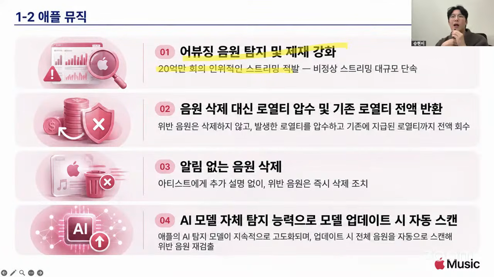
강사는 해외의 '스트리밍 팜'도 설명해요. 마구간 같은 공간에 휴대폰과 태블릿을 수백 대 놓고 VPN(Virtual Private Network)으로 IP를 바꿔 가며 재생을 돌리는 곳이에요. AI 음원 초기에 이런 식으로 수백억 원을 번 사람이 결국 미국 연방 수사기관에 잡혀갔다는 이야기도 덧붙여요. 어뷰징은 범죄라는 거예요.
유튜브: 기준은 높이고, 양산형은 빼고
유튜브 슬라이드는 세 줄이에요. 1번 'YPP 기준 전격 변경'에 롱폼 4,000시간→8,000시간, 숏폼 90일간 1,000만 회→2,000만 회가 적혀 있어요. 2번 'AI 슬롭 철저 배제'는 조회수나 클릭률보다 진정성 있는 시청 시간과 시청 지속 시간을 우대한다는 뜻이에요. 3번은 양산형 플리 채널이 대거 빠지면서 조회수당 최대 12원까지 나온다는 내용이에요.
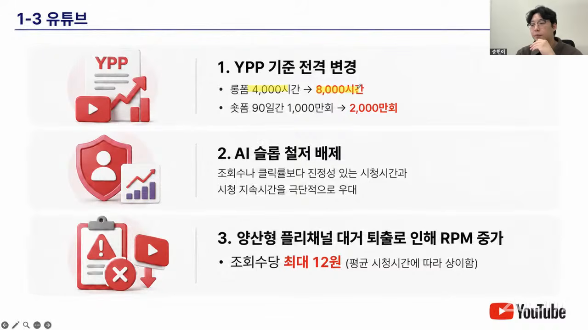
쇼츠가 더 어려운 이유도 설명해요. 롱폼은 1년 동안 시청 시간을 채우면 되지만, 쇼츠는 90일 안에 조회수를 채워야 하고 하루만 지나도 다시 쌓아야 해요. 조회수당 단가가 영상마다 5원, 12원으로 다른 건 영상 길이에 따라 광고 수가 달라서라고 해요.
틱톡·인스타그램: 라벨이 의무예요
틱톡 슬라이드의 세 줄은 이래요. 아티스트 동의 없는 AI 보이스·딥페이크·복제 음원은 발견 즉시 삭제하고 강력히 조치해요. 추천은 시청 시간·완주율·참여도 중심이고 저품질·대량생산·반복 콘텐츠는 노출을 줄여요. AI 생성물은 업로드할 때 AI 라벨을 붙여야 하고, 어기면 수익 창출이 제한돼요. 인스타그램도 같다고 강사는 말해요. 본인 목소리를 쓰는 건 상관없어요.
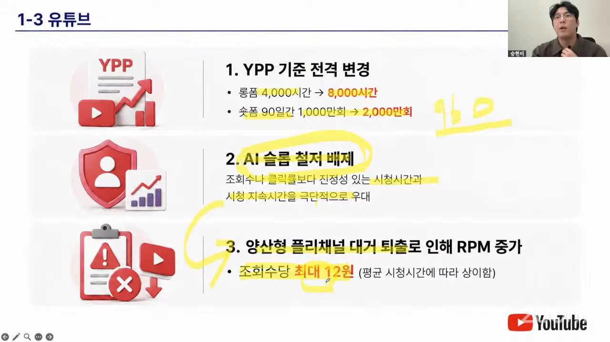
디저: 가장 엄격한 곳
강사가 '가장 위험한 친구'라고 부르는 곳이에요. 슬라이드 1번은 최근 6개월간 재생이 0회인 AI 음원을 강제 삭제한다는 내용이에요(2026년 7월 도입). 2번은 자체 탐지로 100% AI 곡을 찾아 'AI 생성물' 라벨을 붙이고 추천과 공식 플레이리스트에서 영구 제외해요. 검색해야만 들을 수 있어요. 3번은 반대로 좋은 소식이에요. 월 1,000회 이상 재생되고 고유 청취자가 500명 이상인 아티스트는 수익 가중치를 2배로 줘요. 4번은 AI 음원 스트리밍의 85%가 봇이었다는 적발, 5번은 오탐률 0.01% 미만이라는 AI 탐지 기술을 다른 회사에 판다는 내용이에요.
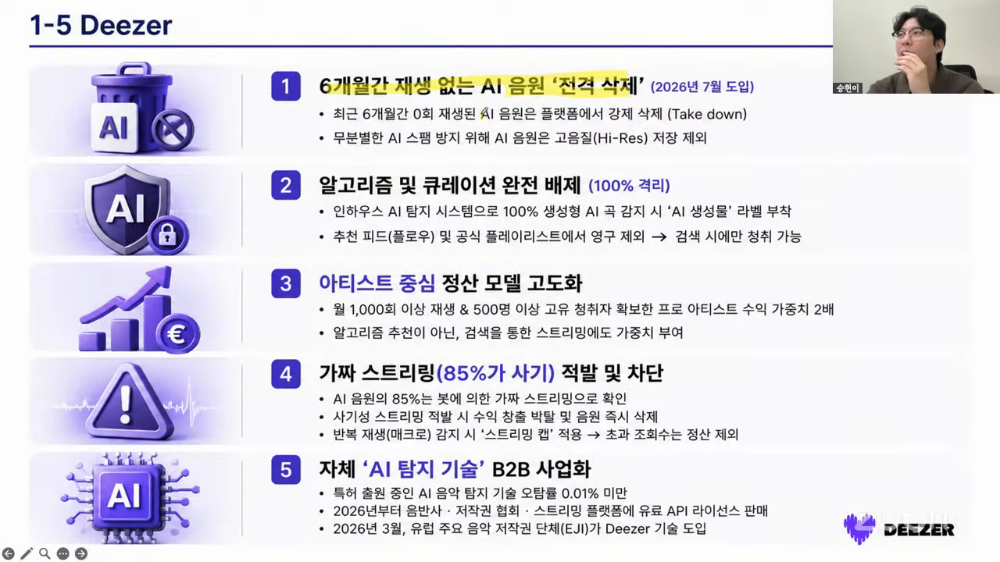
강사는 디저가 한국에서 서비스되지 않아 한국 IP로는 직접 들을 수 없다고 말해요. 그리고 유럽의 주요 음악 저작권 단체들이 디저의 탐지 기술을 도입했다는 점을 무섭다고 표현해요.
타이달과 Suno
타이달 슬라이드는 문장 하나예요. 'AI 음악 스트리밍 로열티 미제공 선언'. 강사는 대표가 아티스트(제이지)인 회사라 그럴 만하다고 보고, 한국에선 서비스되지 않는다고 덧붙여요.
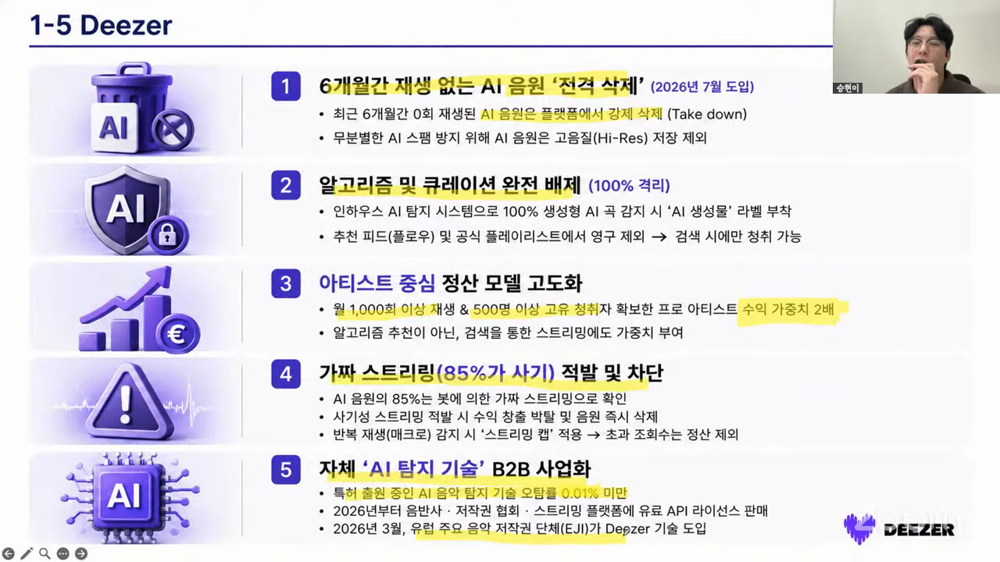
작곡 도구 Suno도 9월에 정책을 바꿨어요. 슬라이드 1번에 Pro 요금제는 월 20건, '프리미엄 요금제'는 월 60건 다운로드로 제한하되 스튜디오 기능을 쓰면 무제한이라고 적혀 있어요. 2번은 그래서 필요한 만큼 곡을 받기 어려워졌다는 문제, 3번은 양산형 플레이리스트를 만들기 어려워졌다는 결과예요. 강사는 원래 상위 요금제를 써서 타격이 없었고, 크레딧이 넉넉해 한 달 2,000~3,000곡을 만들 수 있다고 해요.
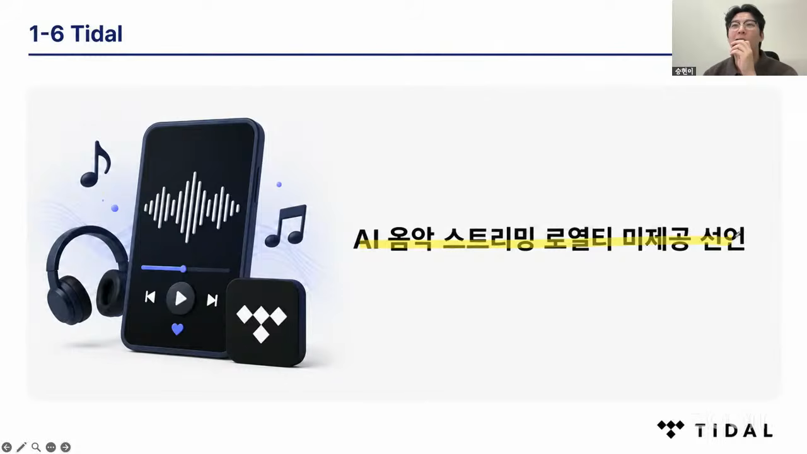
음원과 계정이 삭제되는 이유
강사도 음원을 수천 곡 삭제당하고 계정이 날아가고, 특정 유통사에서 IP 차단까지 당해 봤다고 해요. 화가 나서 삭제된 음원의 제목, 형식, 앨범, 아티스트, 길이, 앨범 커버를 전부 뜯어봤더니 패턴이 비슷했대요. 그 결과를 음원 쪽 넷, 계정 쪽 셋으로 나눠 보여 줘요.
삭제 당하는 음원의 특징
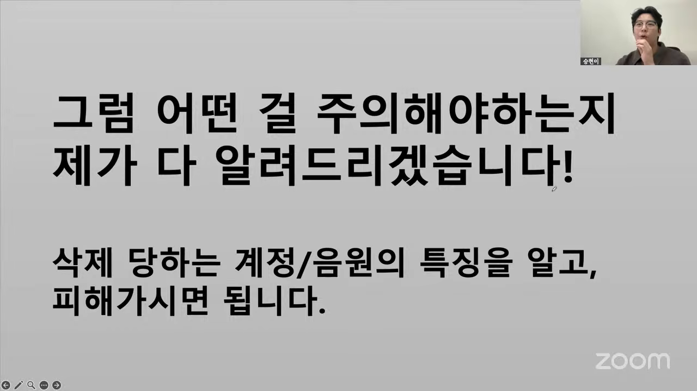
- AI 음악만 담은 플레이리스트: 발매해도 아무도 안 들으니, 자기 곡만 넣은 플레이리스트를 만들어 직접 돌리는 경우예요. 어뷰징으로 처리될 확률이 높아요.
- 'Sleep Music 01, 02' 같은 의미 없는 제목: 제목 짓기가 귀찮아 'Gym 1, Gym 2', 'Running 1, Running 2'처럼 번호만 붙이는 경우예요.
- 같은 프롬프트로만 만든 앨범: 프롬프트 하나로 열 곡을 뽑아 그대로 앨범을 내는 경우예요. 강사는 음원 파일 안 데이터에 프롬프트, Suno 이름, AI라는 글자가 남아 있다고 해요. 앨범의 모든 곡 데이터가 같으면 티가 나니 프롬프트를 곡마다 달리해야 해요.
- 너무 낮은 품질: 노이즈가 꼈는지, 가사가 뭉개졌는지, 후반부가 이상한지 들어 보지도 않고 내는 경우예요.
삭제 당하는 계정의 특징
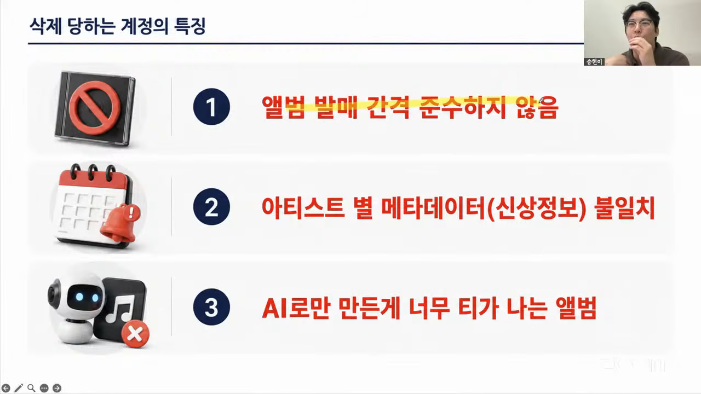
- 발매 간격을 안 지켜요: 매일 앨범을 내라는 강의도 있지만, 매일 앨범을 내는 아티스트는 지구상에 없어요. 일주일에 하나, 많아야 둘까지는 봐줄 수 있다고 해요. 하루 열 곡씩 매일 내면 누가 봐도 양산이에요.
- 아티스트별 메타데이터가 안 맞아요: 한국인 아티스트 한 명이 어제는 팝, 오늘은 K팝, 내일은 J팝, 그다음엔 브라질 펑크를 내는 경우예요. 여러 장르를 하고 싶으면 아티스트를 여러 명 만들면 돼요.
- AI로만 만든 티가 너무 나요: 앨범 커버에 AI 이미지 생성기 로고가 그대로 남아 있거나, 소리 자체가 너무 AI 같은 경우예요.
강사는 이것만 지키면 삭제는 당하지 않는다고 정리해요. 핵심은 '성의감'이에요.
돈이 들어오는 구조
삭제를 피하는 법 다음은 돈을 버는 순서예요. 슬라이드는 여섯 단계를 왼쪽에서 오른쪽으로 이어요. 1 프롬프트 기획, 2 AI로 음악 제작, 3 음원 편집·마스터링, 4 유통 플랫폼 등록, 5 프로모션 & 마케팅, 6 수익화예요. 칸마다 아래쪽에 쓰는 도구가 적혀 있어요.
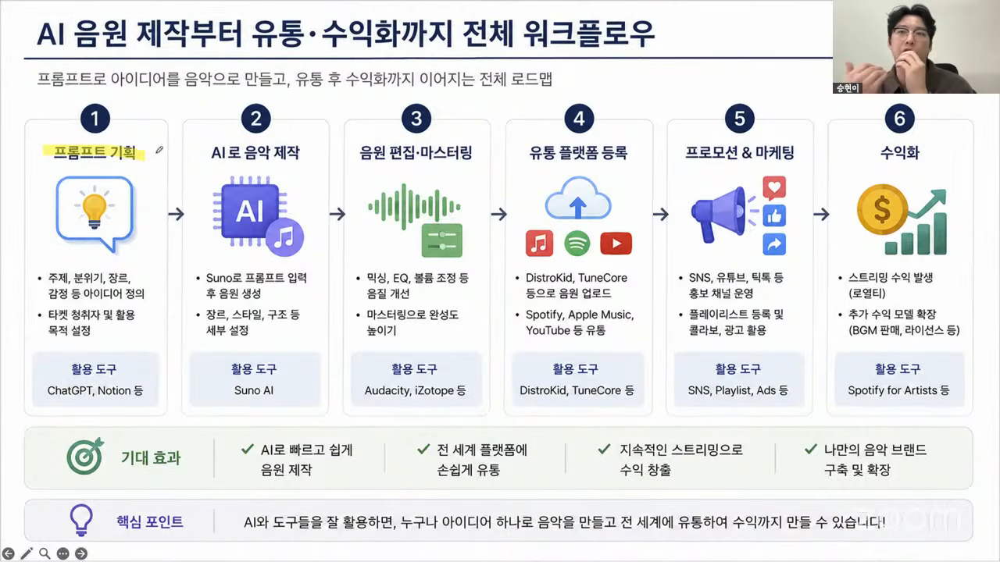
강사가 강조하는 건 세 가지예요. 만든 곡을 그대로 올리지 말고 최소한 마스터링은 한 번 할 것. 유통은 어렵지 않으니 걱정하지 말 것. 프로모션도 별것 없이 플레이리스트와 유튜브 영상을 만들어 올리면 누군가 듣는다는 것이에요. 인스타그램·틱톡 계정은 시간이 많이 들어 굳이 권하지 않아요. 하루 한두 시간만 쓰고 싶은 사람에게 맞춘 방식이라서요.
슬라이드의 유통 도구 칸에는 DistroKid와 TuneCore가 적혀 있지만, 뒤의 시연에서는 Ditto를 써요. 둘 다 같은 역할을 하는 유통사예요.
반복과 누적
다음 슬라이드는 이 구조를 한 문장으로 줄여요. 'AI 음원 수익은 반복과 누적이 핵심입니다'. 아래 두 상자가 화살표로 이어져요. 사람들이 다시 듣는 비율(재청취율)이 쌓여 누적 자산이 된다는 그림이에요.
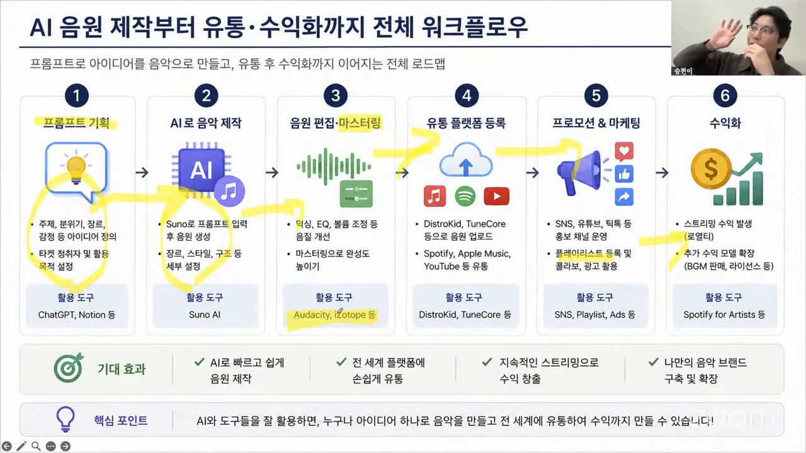
유통사 한 번으로 전 세계에
유통사에 한 번 등록하면 정해진 날짜에 여러 스트리밍 사이트에 알아서 올라가요. 슬라이드 왼쪽 격자에 Spotify, Apple Music, YouTube Music, YouTube, Deezer가 첫 줄에 있고, 그 아래로 Tidal, Amazon Music, Yandex Music, Qobuz, Beatport, iTunes, Pandora, KKBOX, Last.fm, Boomplay 등이 이어져요. 맨 오른쪽 아래 Boomplay는 아프리카의 음원 서비스예요. 한국에서는 FLO에 나가고, 멜론과 지니에는 나가지 않는다고 강사는 말해요.
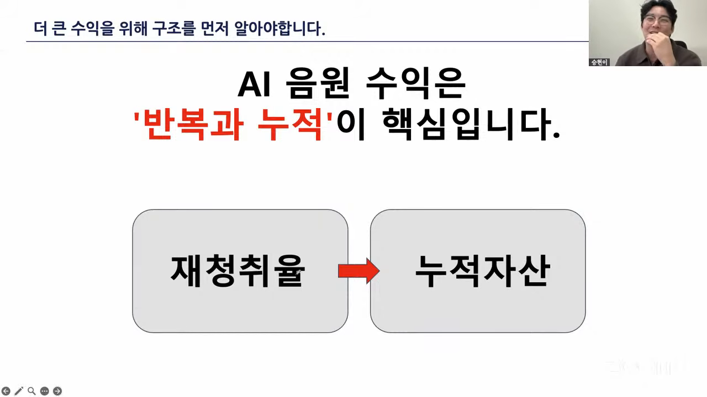
곡 하나로 네 군데에서
유튜브 부업은 유튜브 한 곳에서만 돈이 나와요. 강사는 그 대신 모든 플랫폼을 함께 쓰는 전략을 택했어요. 슬라이드에 수입원이 네 줄로 적혀 있어요.
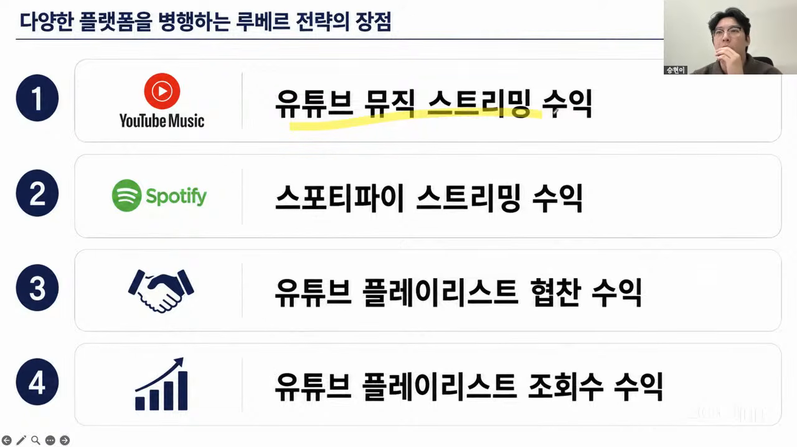
3번 '플레이리스트 협찬'이 강사가 꼽는 꿀이에요. 기성곡을 모은 유명 플레이리스트 채널에 음반사나 엔터테인먼트 회사가 연락해 "우리 노래 하나 넣어 주면 몇백만 원 줄게" 하는 방식이에요. 채널이 자리 잡으면 AI 플레이리스트 채널에도 이런 제안이 온다고 해요.
강사가 보여 준 정산 화면
강사는 자기 수치를 화면으로 보여 줘요. Ditto 계정 하나의 2025년 스트리밍이 약 187만 회였고, 이런 계정이 다섯 개였대요. 아래 화면은 LANDR 두 계정의 12월 잔액($2,527.84, $1,637.11, 합계 약 602만 원)과 Ditto 한 계정의 1월 주별 정산(합계 약 273만 원)이에요.
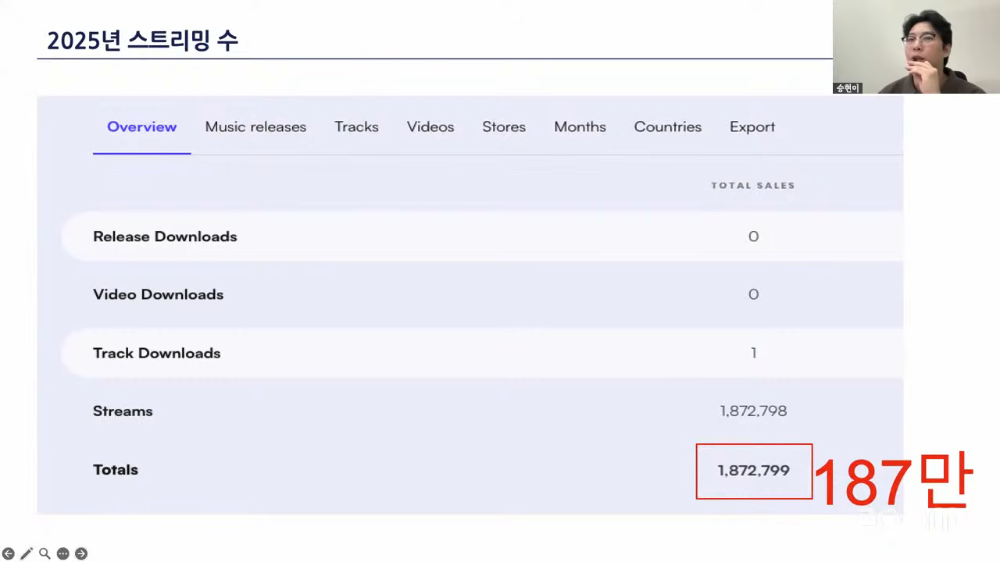
유통사 계정을 여러 개 쓴 이유도 설명해요. 당시 Ditto에서만 쓰던 아티스트가 200명이 넘었는데, 계정 하나에 등록할 수 있는 아티스트는 많아야 40명 정도였대요. 하루 1,000곡씩 만들어 올리던 시기라 계정이 여러 개 필요했고, 지금은 그렇게 하지 않는다고 해요.
알고리즘과 플레이리스트 채널 운영
"AI 음악을 만들었는데 수익이 안 나요"라는 고민에 강사는 구조부터 설명해요. 슬라이드는 여섯 칸을 두 줄로 이어요. 윗줄은 노출 → 청취 → 반응, 아랫줄은 추천 강화 → 노출 강화 → 반복 재생이에요.
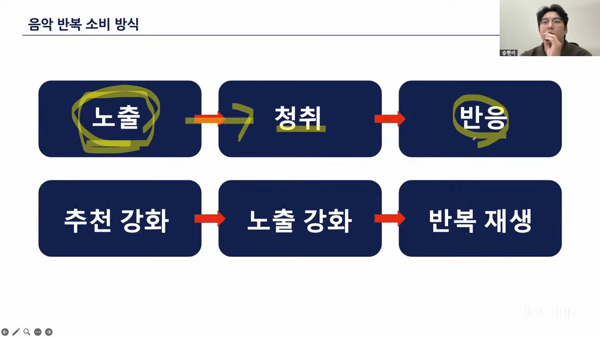
발매된 모든 음원은 처음에 한 번은 신곡으로 노출돼요. 누군가 듣고 반응하면 추천이 강해지고, 더 많은 사람에게 보여요. 이게 알고리즘의 기본이에요.
그리고 돈이 나오는 조건이 유튜브와 달라요. 유튜브는 수익 창출 채널이어야 하고 광고가 붙어야 돈이 돼요. 강사 설명으로는 음원 스트리밍 사이트는 구독자 수와 상관없이 30초만 들으면 돈을 주고, 1스트리밍당 약 6원이에요.
반응을 직접 만드는 법
그래서 강사는 내 곡으로 플레이리스트를 직접 만들어요. 슬라이드는 이 흐름을 네 단계로 보여 줘요. 발매 음원 노출 → 플레이리스트 제작·진입 → 다른 큐레이터 플레이리스트 진입 → 안정적인 연금형 수익 실현이에요.
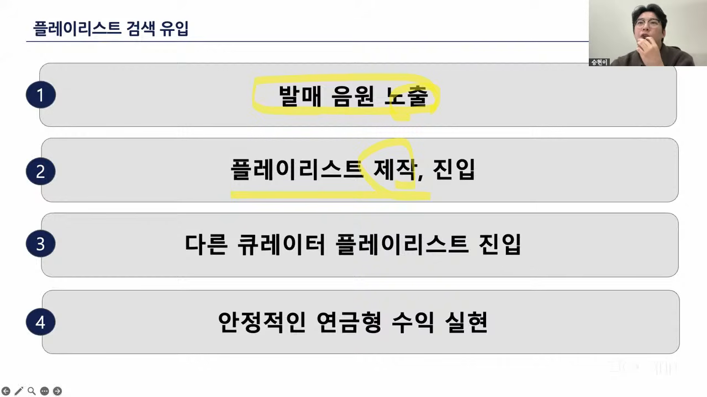
앞에서 '자기 곡만 담은 플레이리스트를 직접 재생하면 어뷰징'이라고 했죠. 여기서 말하는 건 유튜브 플레이리스트 채널처럼 다른 사람이 듣는 공간을 만드는 거예요. 재생을 내가 돌리는 게 아니에요.
로파이 채널의 썸네일
가장 많이 받는 질문은 "로파이 플레이리스트 채널은 어떻게 해야 잘돼요?"래요. 답은 썸네일이에요. 슬라이드 오른쪽처럼 애니메이션풍 일러스트를 쓰면 사람들이 이미 '아, 로파이' 하고 누르도록 학습돼 있어요. 왼쪽에는 감성적 색감과 분위기, 음악과 몰입의 순간, 아트 스타일과 디테일이 로파이 특유의 이미지로 정리돼 있어요.
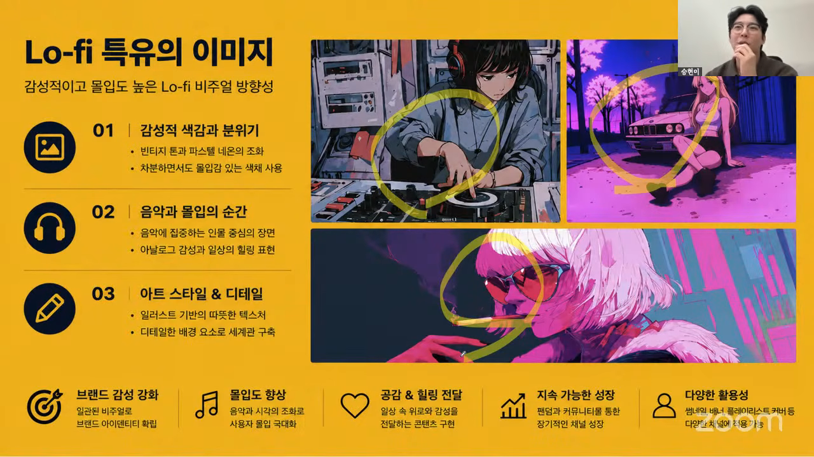
애니메이션풍이 싫다면 다른 길도 있어요. 다음 슬라이드의 채널은 아이스 라테, 우롱티, 탄산수, 말차 라테 같은 음료 사진만 같은 색감으로 써요. 통일된 색감과 무드로 채널 정체성을 만든 경우예요. 조회수는 수십만~100만 회대예요.
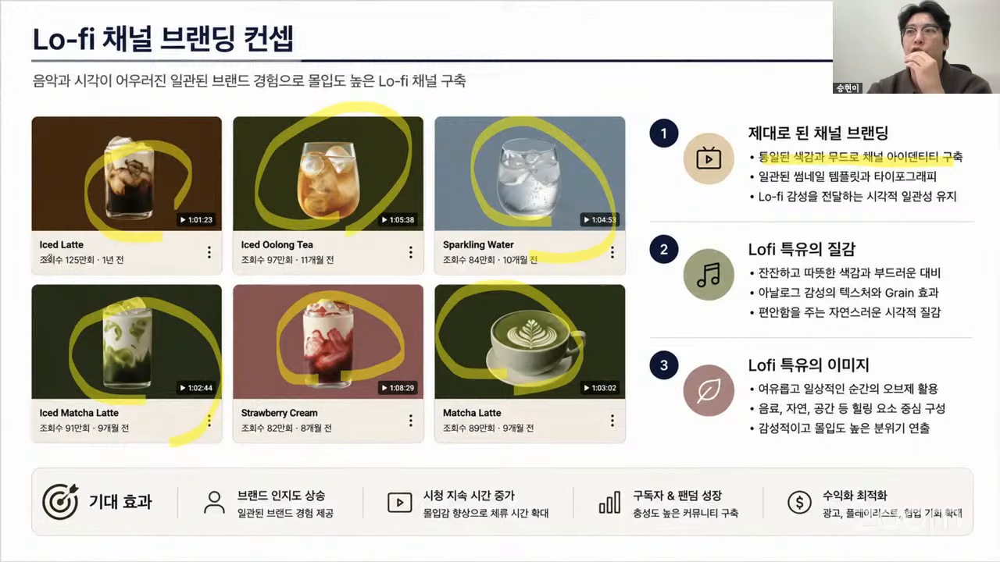
강사는 바로 이어서 주의점을 붙여요. 슬라이드의 다섯 칸 중 핵심은 '참고는 하되 그대로 따라하지 마세요'와 '저희 채널을 비롯해 다른 채널에 피해를 주지 마세요'예요. 남의 채널 브랜딩은 그 주인이 노력해서 만든 거라 베끼면 그 채널에 피해가 가고, 내 채널은 양산형으로 보일 수 있어요. 아래 빨간 띠에는 과도하게 모방하면 저작권과 채널 운영에 불이익이 생길 수 있다고 적혀 있어요.
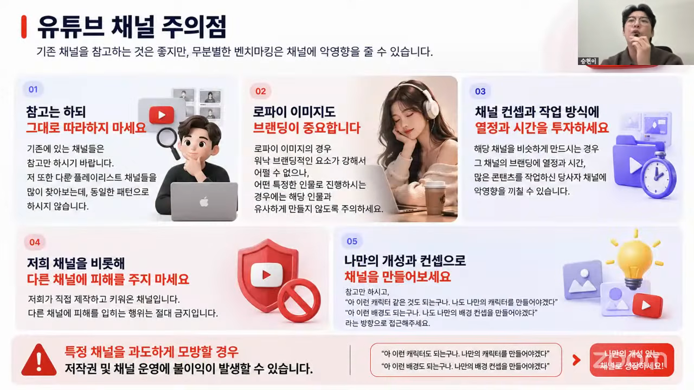
왜 내 채널은 실패할까요
슬라이드가 실패 이유를 네 줄로 정리해요.
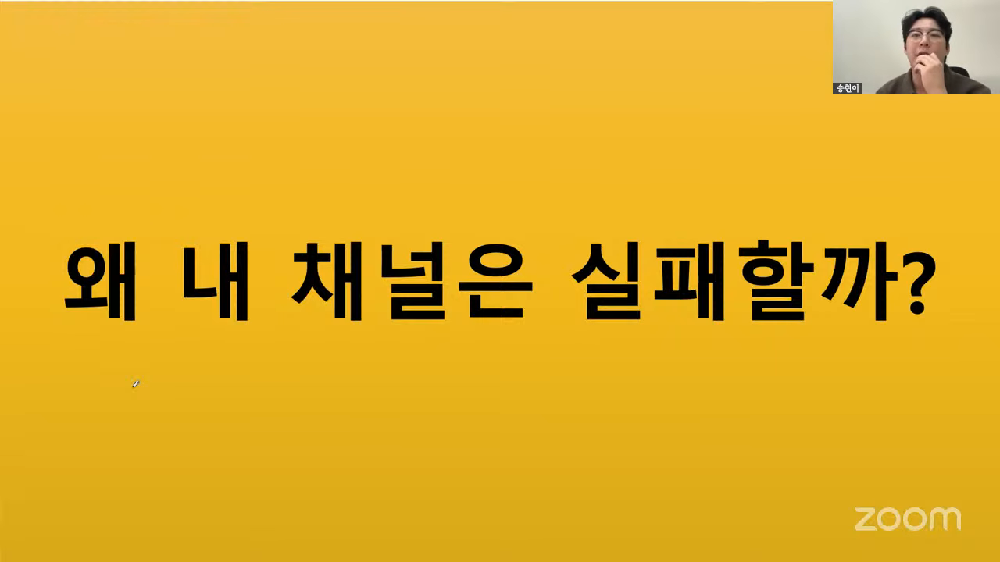
- 곡 만드는 데 시간을 너무 써요: Suno는 웬만하면 잘 뽑아 줘요. 노이즈나 후반부 분위기 이탈 같은 오류만 잡으면 돼요. 내 취향에 맞추려다 하나 만들 때 남들은 열 개, 스무 개를 만들어요.
- 썸네일 브랜딩이 계속 바뀌어요: 화장품 사진으로 하다가 조회수가 안 나오면 면봉, 그다음엔 또 다른 걸로 바꿔요. 하나로 끝까지 밀어붙이지 않아요.
- 상황과 감성 표현이 부정확해요: 썸네일은 면봉인데 제목은 '드라이브할 때 듣기 좋은 플리', '헬스장 플리'인 식이에요. 강사라면 화장품 사진에 '올리브영 매장 플리', '화장품 편집숍 플레이리스트'라고 붙이겠다고 해요.
- 업로드가 들쭉날쭉하고 빨리 포기해요: 월요일에 출근했다가 며칠 쉬고, 2주 쉬다 또 나오는 신입에게 월급을 줄까요. 유튜브도 알고리즘을 안 줘요.
해법 슬라이드의 3번이 가장 중요해요. '내 채널이지만 청취·시청은 다른 사람이 합니다'. 이 썸네일을 보고 사람들이 누를지, 내가 유튜브라면 이 채널에 알고리즘을 줄지 생각해 보라는 거예요.
썸네일을 어떻게 만들지 모르겠다면 이 세 가지를 보래요. 하나의 주제 안에서 변화를 주기(카페 재즈면 카페 재즈 안에서), 음식·사진·공간·배경·피사체 중 하나에 집중하기, 노래 내용을 정확하게 보여 주기예요. 슬라이드 오른쪽 사진들이 각각의 예시예요. 썸네일은 PPT(PowerPoint)로 만들어도, AI로 만들어도 된다고 해요.
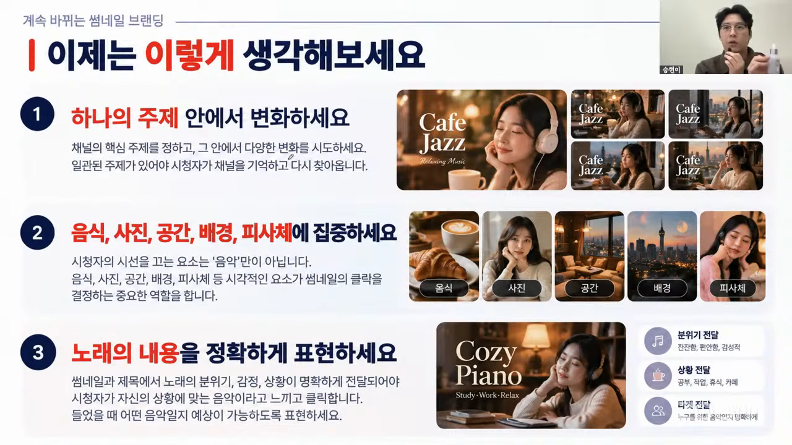
마라톤이라고 생각하세요
마지막 슬라이드는 '포기하지 마세요, 성장에는 시간이 필요합니다'예요. 대리운전이나 배달 같은 부업은 오늘 일하면 바로 돈이 나오는 100m 달리기지만, 이건 42.195km 마라톤이래요. 미스터비스트도 500~600번째 영상에서야 주목받았다는 점, 업로드 주기를 정하고 맞추라는 점이 적혀 있어요.
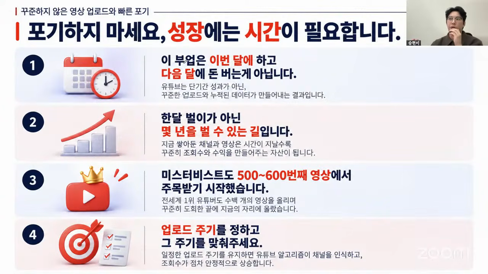
ChatGPT·Suno로 만들고 Ditto로 유통하기
강의 중반에 강사는 실제로 곡을 만들어 유통까지 끝내는 과정을 실시간으로 보여 줘요. 쓰는 도구는 ChatGPT와 Suno 두 개, 그리고 유통사 Ditto예요. 고민을 오래 하지 않는 게 강사 방식이에요.
1. ChatGPT로 가사와 프롬프트 받기
주문은 짧아요. "가을에 듣기 좋은 기분 좋은 여자 R&B 하나 깔끔하게 만들어 보자. 가사, 제목, 영어 프롬프트로 해 줘." 화면 위쪽에 'Autumn Feels Like You' 가사의 마지막 줄이, 아래에 'Suno Production Prompt'가 나와요. 프롬프트에는 약 94 BPM(Beats Per Minute), 로즈 피아노와 베이스 기타, 절제된 힙합 드럼, 친밀하고 숨결 섞인 여성 보컬 같은 지시와 함께 EDM(Electronic Dance Music)·트랩 드럼·과한 보컬 효과는 피하라는 말까지 들어 있어요.
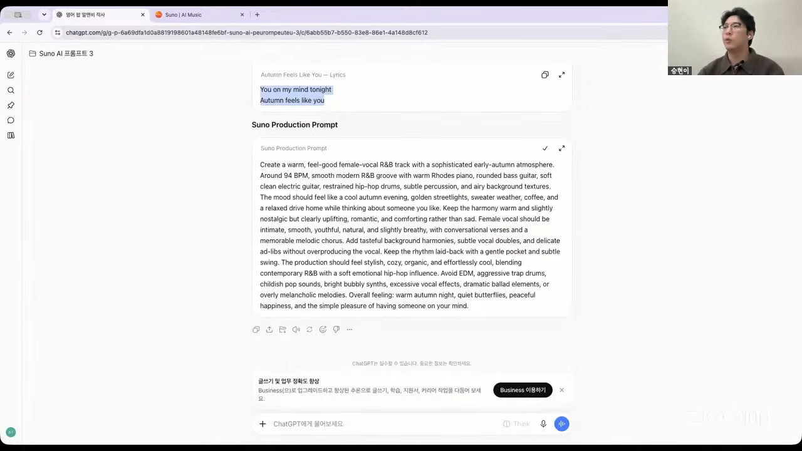
2. Suno에 붙여 넣고 곡 뽑기
가사와 프롬프트를 Suno의 Advanced 모드에 붙여 넣어요. 가사 앞의 '[Intro]' 표시는 지워요. 인트로를 넣으면 Suno가 허밍을 넣는데, 강사는 그 허밍을 싫어해서래요. 스타일 칸은 1,000자 제한이라 넘치는 뒷부분을 살짝 잘라요. 화면 오른쪽 목록을 보면 같은 제목 'Autumn Feels Like You'가 모델 표시 v6와 v6-mini로 두 개씩 생성된 게 보여요.
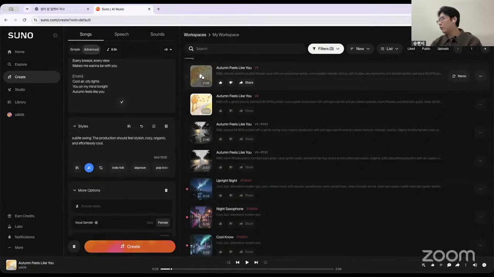
생성된 곡을 들어 보고 채팅으로 투표를 받아 고른 뒤, 같은 방식으로 한 곡을 더 만들어요. 다음이 궁금하지 않으면 다시 뽑는 게 강사의 기준이에요. 기존 가수 이름을 넣어 "누구처럼 해 줘" 하면 Suno가 만들어 주지 않아요.
3. WAV로 내려받기
곡 옆 점 세 개 → Edit → Open Studio에서 싱글 트랙으로 열고, Export → Full Song으로 내보내요. 멀티 트랙은 악기마다 따로 나와서 이 단계에선 필요 없어요. 다운로드 창에서는 WAV(Waveform Audio File Format)를 골라요. 강사는 MP3(MPEG-1 Audio Layer III)가 2K 화질이라면 WAV는 4K라고 비유해요.
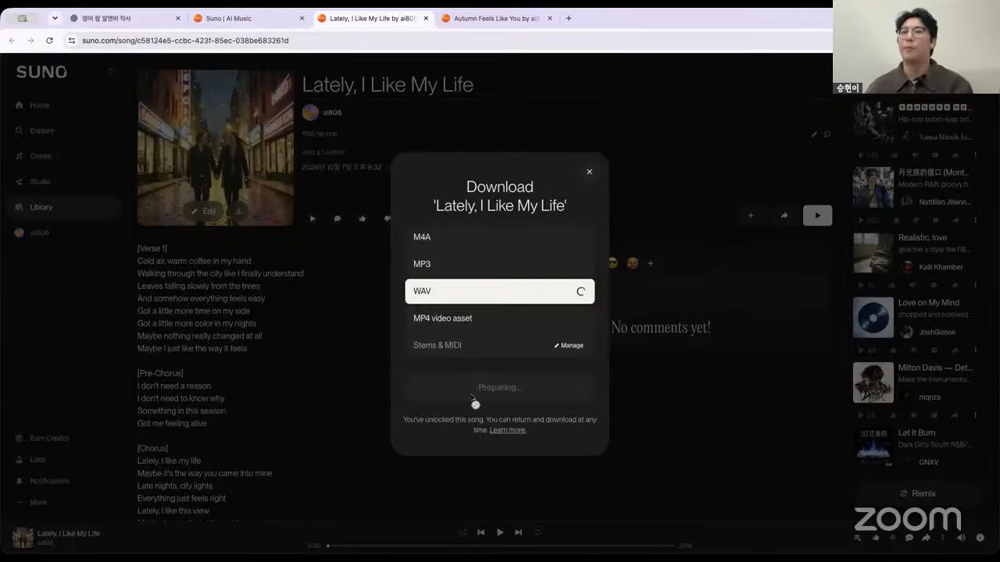
4. 허밍만 잘라 내기
이 부분은 기존 무료 강의에서 안 풀었던 팁이래요. 노래는 좋은데 허밍이 거슬리면, 이번엔 Open Studio를 멀티트랙으로 열어요. 화면처럼 악기별 트랙이 색깔 띠로 나뉘어요. 보컬 트랙을 찾아 확대하고 허밍 구간만 잘라 낸 뒤 Full Song으로 다시 내보내면 돼요. 트랙을 나누는 데 시간이 걸리고 크레딧도 드니, 여유가 있을 때 하래요.
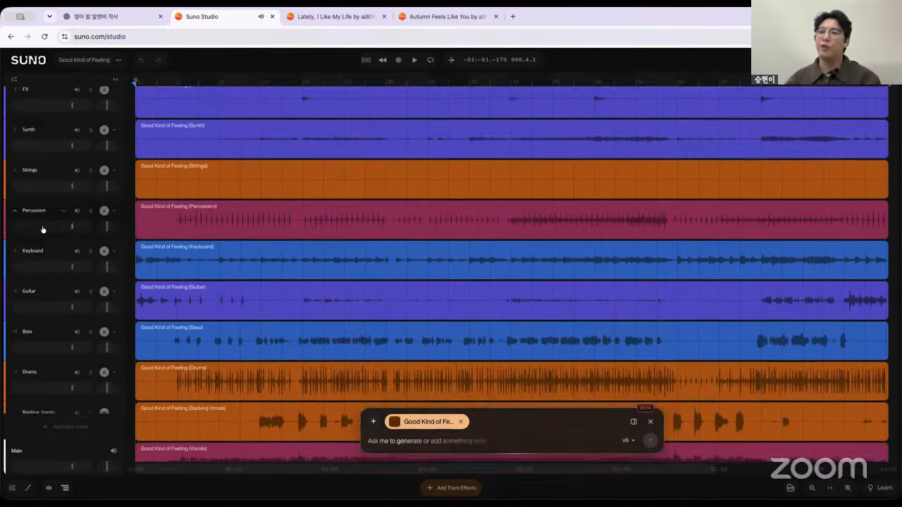
5. 마스터링
내려받은 곡들은 마스터링 프로그램에 한꺼번에 넣어 처리해요. 강사는 마스터링을 "볼륨을 키우되, 찢어지지 않게 키우는 것"이라고 설명해요. 처리 전과 후를 틀어 비교해 주는데, 소리 크기가 확연히 달라요. Suno 자체 볼륨이 낮아서 올려 주는 작업이 필요하다고 해요. 왜 중요한지는 마지막 섹션의 질의응답에서 비유로 다시 나와요.
6. Ditto로 유통하기
Ditto에서 'Create Music Release'를 누르고 앨범 제목을 정한 뒤 음원과 앨범 커버를 올려요. 커버는 ChatGPT로 뚝딱 만들었대요. 세부 정보 화면에서 눈여겨볼 칸은 저작권자(Copyright Holder)예요.
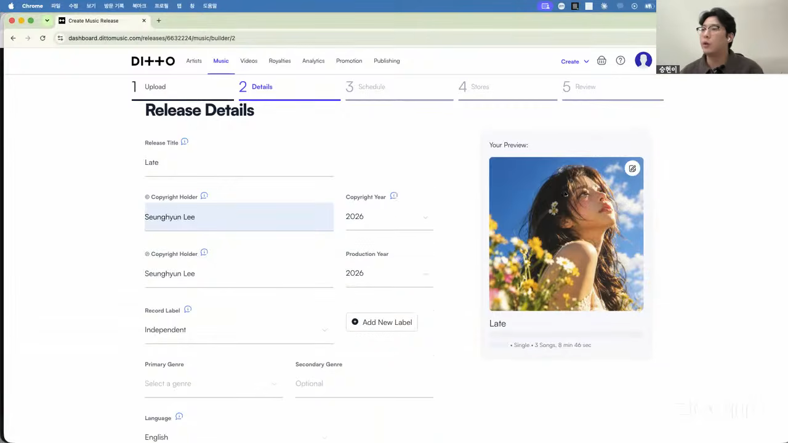
장르(팝, R&B)와 아티스트를 넣고, 트랙 크레딧에 작사·작곡·프로듀서·리드 보컬을 적어요. '모든 트랙에 복제'를 누르면 같은 메타데이터가 전 곡에 들어가요. 앞에서 말한 메타데이터가 바로 이 칸들이에요.
다음은 출시일이에요. 달력에서 노란 점이 찍힌 가까운 날짜는 '우선 배포 전용'이라 돈을 내야 해요. 강사는 40달러라고 말해요. 표준 배포는 10일 이상 뒤라 무료예요. 강사는 그냥 10일 기다려 18일을 골라요.
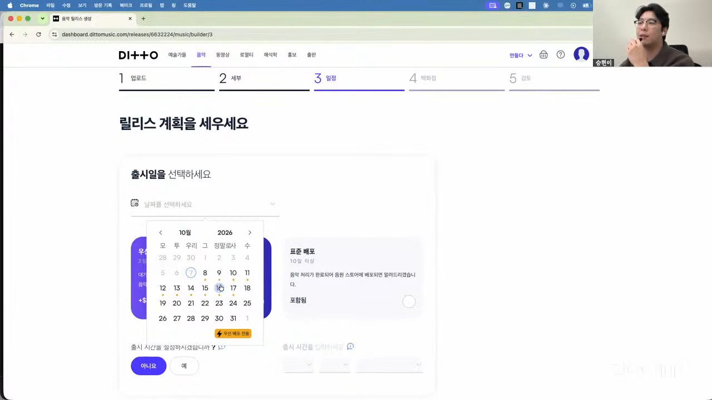
같은 화면 아래 옵션들은 다 건너뛰고 하나만 켜요. '릴리스 보호 기능을 추가합니다'예요. 화면 설명대로라면 계정을 해지하거나 구독료를 못 내도 음원을 스토어에서 내리지 않고 로열티를 계속 준다는 약속이에요. 평생 유통사에 구독료를 낼 순 없으니 내 음원 권리를 지켜 두는 장치라고 강사는 설명해요.
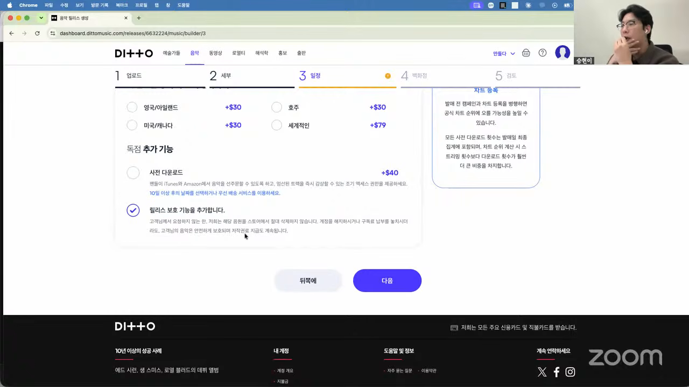
스토어 단계에서는 스포티파이, 아이튠즈, 애플 뮤직, 아마존, 틱톡, 디저 같은 수십 곳이 기본으로 체크돼 있어요. Ditto 한 곳에 올리면 이 목록 전체로 보내 줘요. 한국에서는 FLO가 들어 있어요. 곡마다 붙는 국제 음반 코드(ISRC(International Standard Recording Code))는 유통사가 자동으로 만들어요.
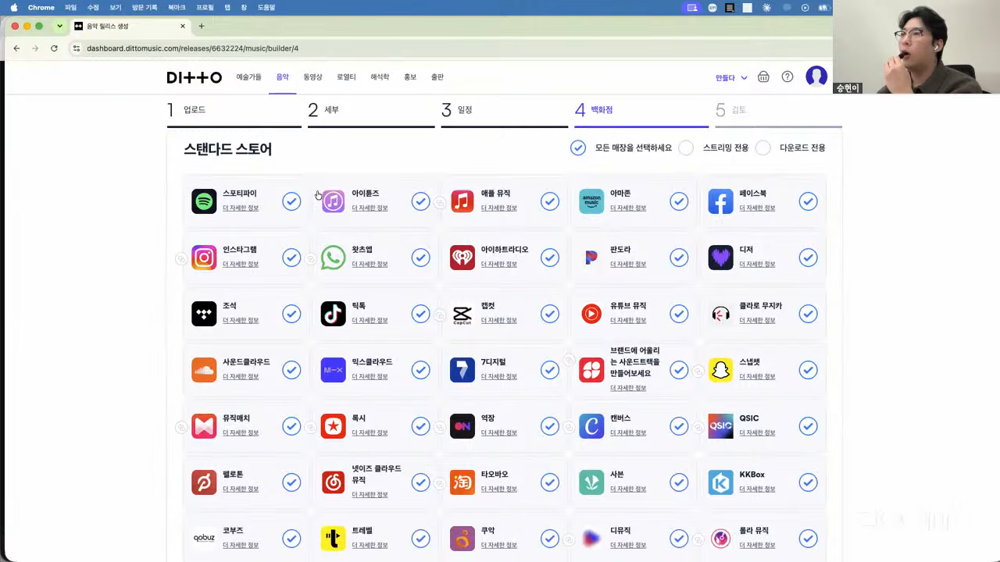
목록 아래 'Advanced Stores'에는 YouTube Content ID & Shorts, AI Platforms, Audio Fingerprint, Beatport 같은 추가 항목이 있어요. 강사는 핑거프린트도, 콘텐츠 ID(CID(Content ID))도 하지 말라고 해요. 원래 CID는 AI 음악에 잘 주지 않고, Ditto에서는 지금 AI 음원의 CID 등록이 안 된다고 해요.
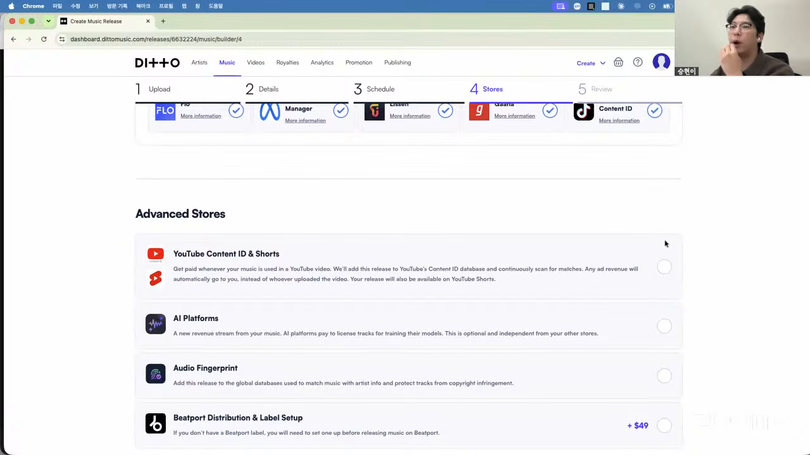
마지막으로 메타데이터를 확인하고 주문하면 끝나요. 앨범 하나에 28곡까지 넣을 수 있대요. 강사가 정리한 전 과정은 이 한 장이에요. ChatGPT로 가사·주제 만들기, Suno로 세 곡 제작, 음원 마스터링, 음원 유통이에요.
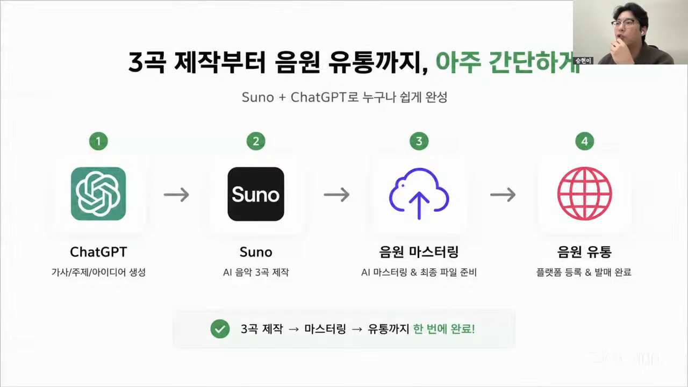
1년 성장 시뮬레이션
"혼자 해 보면 몇 곡을 어떻게 내야 하나요?"에 대한 답으로 강사는 초보자용 목표표를 단계별로 보여 줘요. 출발점은 '한 달에 40곡(주 10곡 × 4주), 곡당 평균 50~200회'예요. 이 속도로 곡을 계속 쌓을 때 한 달 수익이 어떻게 커지는지 슬라이드 다섯 장의 숫자를 한 그림에 옮겼어요.
단계마다 할 일도 달라요. 1개월 차는 수익보다 '데이터'를 모으는 기간이에요. 어떤 곡에 사람들이 반응하는지 보는 거예요. 2개월 차는 잘되는 곡의 패턴을 찾고, 3개월 차부터는 데이터를 기준으로 전략을 고쳐 반응 좋은 곡의 비율을 늘려요. 6개월 차엔 반응 좋은 유형을 늘려 수익을 키워요.
12개월 차의 두 갈래
1년 차 슬라이드는 두 선택을 나란히 놓아요. 왼쪽 파란 칸은 매달 60곡(주 15곡)씩 꾸준히 발매해 720곡을 쌓는 사람이에요. 12개월 누적 25만~55만 회, 예상 수익 300만~500만 원이에요. 오른쪽 초록 칸은 발매는 멈추고 이미 만든 720곡을 관리하며 운영하는 사람이에요. 10만~20만 회, 100만~200만 원이에요.
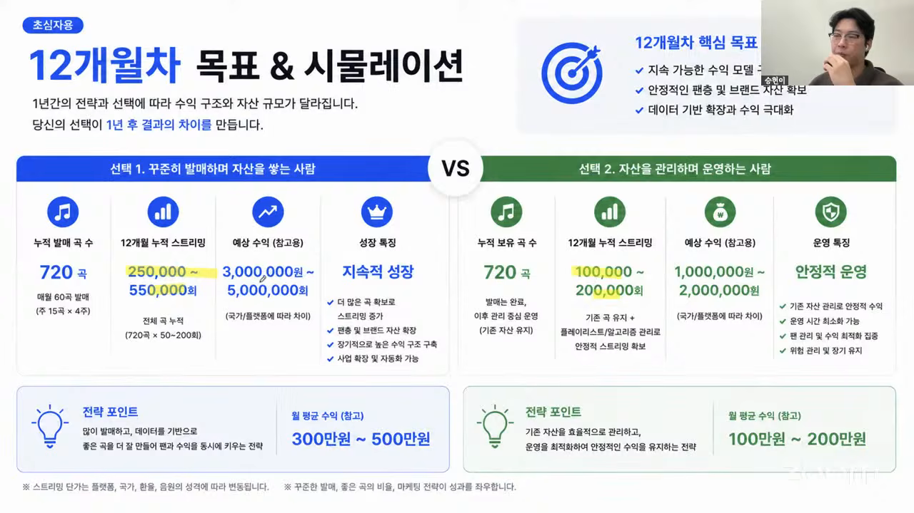
강사는 작은 수익이라도 들어오는 게 확실한 부업이라는 점을 강조해요. 그리고 음원 수익은 정산까지 약 3개월이 걸리고, 유튜브는 수익 창출이 되면 바로 들어온다고 해요.
질의응답에서 나온 실전 답
강의 후반 두 시간 가까이는 채팅 질문에 답하는 시간이에요. 화면에는 계속 같은 안내 슬라이드만 떠 있어서 캡처할 장면이 없어요. 대신 실제로 쓸모 있는 답만 주제별로 모았어요.
돈과 시간에 관한 답
| 질문 | 강사의 답 |
|---|---|
| 강의 외에 드는 비용은요? | Suno 월 약 4.5만 원(환율 따라 4.9만 원), Ditto 연 8만 원, 유튜브 뮤직 월 1.1만 원이에요. |
| 음원은 6원이라더니 유튜브는 12원이에요? | 음원 사이트 기본은 6원이 맞아요. 유튜브는 광고가 붙는 만큼 받으니, 12시간짜리처럼 긴 영상은 광고가 많아 조회수당 단가가 커져요. |
| 시청 시간 조건은 어떻게 채워요? | 브이로그는 영상마다 200시간, 400시간씩 모아야 하지만, 플레이리스트는 반복해서 듣다 보니 영상 하나가 터지면 조건이 한 번에 채워지는 경우가 많아요. |
| 컴퓨터 사양이 좋아야 하나요? | 아니요. 10년 된 컴퓨터로 하는 사람도 있어요. 윈도우도 돼요. |
| 수익은 어디로 받아요? | Ditto는 카카오뱅크 같은 국내 계좌를 등록할 수 있어요. 강사는 DistroKid는 페이팔로 달러를 받았다고 해요. |
업로드와 발매 속도
"하루에 하나씩 올리느라 스트레스를 받았다"는 질문에 강사는 처음부터 매일 올리면 오히려 독이라고 답해요. 유튜브가 영상마다 무엇에 관한 건지 파악할 시간이 필요한데, 매일 올라오면 어느 영상에 알고리즘을 줘야 할지 몰라요. 구독자가 생긴 뒤엔 괜찮지만, 그 전에는 3~4일 간격이 가장 좋대요.
음원 발매도 같아요. 아티스트 한 명이 매일 앨범을 내면 안 되고, 이틀에 하나도 안 돼요. 적어도 3~4일에 하나보다 빠르면 안 된다고 해요. 다른 아티스트라면 같은 날 내도 괜찮아요. 일주일에 앨범 한두 장이 가장 좋다고 정리해요.
저작권에 걸리는 경우
기존 노래를 AI로 트로트 버전처럼 리믹스하면 수익이 날까요. 강사는 실제 사례를 들어요. 기존 곡을 AI로 리믹스해 올리던 채널이 수익 창출을 신청하자, 원곡 저작권자 쪽에서 문제를 삼아 영상이 모두 삭제됐다는 거예요. 남의 저작권으로 돈을 벌겠다고 신청한 셈이라서요. 리믹스는 만들 수 있어도 그걸로 수익을 낼 수는 없다는 게 결론이에요.
콘텐츠 ID는 무조건 좋을까요
CID는 유튜브 어디서든 내 노래가 1초라도 나오면 그만큼의 수익을 내 쪽으로 가져오는 시스템이에요. 브이로그에서 거리 음악 때문에 '저작권 걸린다'고 하는 게 이것 때문이에요. 강사는 유명 가수에겐 좋지만 AI 음악엔 무조건 좋지 않다고 말해요.
| 상황 | CID가 없을 때 | CID가 있을 때 |
|---|---|---|
| 내 수익 창출 채널에서 쇼츠가 1,000만 회 터짐 | 유튜브 조회수 수익으로 바로 받아요. | 수익이 음원 쪽으로 넘어가 몇 달 기다릴 수 있어요. |
| 기다리는 중에 CID가 탈락함 | 해당 없음 | 음원 쪽 돈도 못 받고, 유튜브도 기간이 지나 안 줘요. |
CID는 원래 아티스트의 저작권을 지키려고 만든 장치라 AI 음악을 위해 있는 게 아니라는 설명이에요. 콘텐츠 ID가 이제는 무료가 아니라 유료라는 점도 덧붙여요.
로열티를 다른 사람에게 넘기기
"사정상 내 명의로 부수입을 받을 수 없다"는 질문에는 로열티 스플릿을 알려 줘요. 유통사 관리자 화면에서 음원의 저작인접권 수익을 다른 사람에게 넘기면, 그 사람이 대신 받아요. 나중에 다시 내 앞으로 돌려놓을 수도 있어요. 부모님 용돈을 로열티로 드리는 식으로도 쓸 수 있다고 해요.
그 밖의 답
- 메타데이터가 중요해요? 알고리즘의 기본 틀이에요. 플랫폼이 어떤 노래인지 모르면 듣는 사람에게 올려 주지 못해요.
- 유튜브 뮤직은 왜 구독해요? 유튜브 뮤직이 스트리밍이 잘 나오고, 아티스트 공식 채널(OAC(Official Artist Channel))의 영상이 잘되면 유튜브 뮤직에서도 알고리즘을 밀어 준다고 해요.
- 광고를 붙이면 사람들이 안 들어요? 사람들이 안 보는 건 광고 때문이 아니라 기대한 내용과 달라서예요. 에르메스 상자에 면봉이 들어 있으면 실망하는 것과 같아요. 수익 창출 채널은 올릴 때 광고 여부를 고를 수 있고, 강사는 다 단대요.
- 양산형 채널로 신고당하나요? 신고는 없어요. 다만 수익 창출을 신청할 때 양산형으로 판정되면 거절돼요. 그 전까진 본인도 알 수 없어요.
- 키즈 채널은요? 추천하지 않아요. 키즈로 분류되면 광고 단가가 크게 떨어지고, 아이들은 '아기상어' 원곡을 원하니 AI 곡이 이길 수 없어요.
- 2027년 2월 전에 수익 창출이 된 채널은 새 기준을 안 받나요? 강사는 그렇다고 답하고, 그래서 2월 전에 조건을 채우는 게 좋다고 말해요.
마스터링을 안 하면 생기는 일
마스터링이 왜 필요하냐는 질문에 강사는 비유로 답해요. 외출 준비를 마치고 친구들을 만났는데 모두 키가 190cm이고 나만 160cm라면 어떨까요. 마스터링 안 한 음원이 그 160cm예요. 플레이리스트에서 10의 볼륨으로 듣다가 갑자기 3의 볼륨이 나오면, 사람들은 튄다고 느끼는 게 아니라 그냥 꺼 버려요.